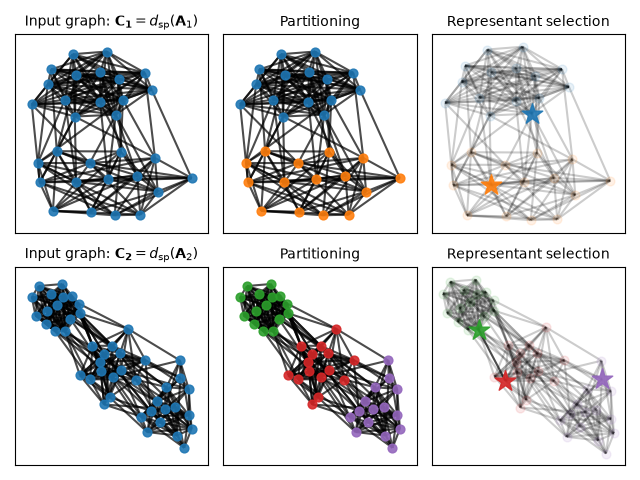
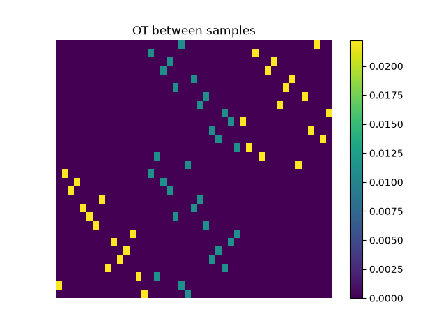
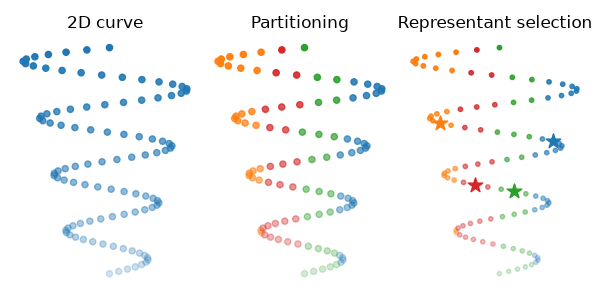
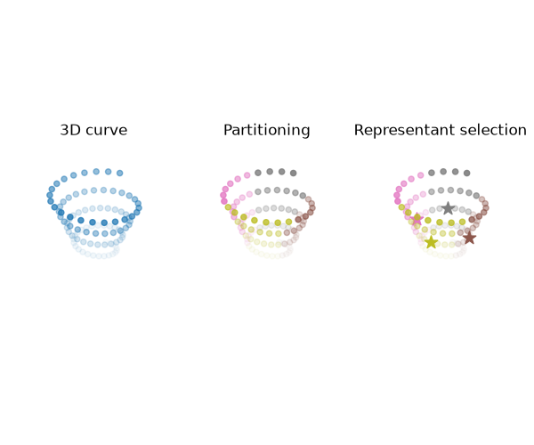
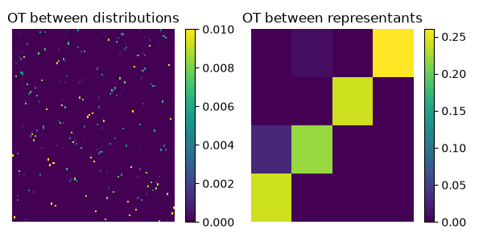

Note
Go to the end to download the full example code.
Quantized Fused Gromov-Wasserstein examples
Note
Examples added in release: 0.9.4 and updated with new API from 0.9.8.
These examples show how to use the quantized (Fused) Gromov-Wasserstein
solvers (qFGW) [68]. POT provides a generic solver quantized_fused_gromov_wasserstein_partitioned
that takes as inputs partitioned graphs potentially endowed with node features,
which have to be built by the user. On top of that, POT provides two wrappers:
i)
quantized_fused_gromov_wassersteinoperating over generic graphs, whose partitioning is performed viaget_graph_partitionusing e.g the Louvain algorithm, and representant for each partition can be selected viaget_graph_representantsusing e.g the PageRank algorithm.ii)
quantized_fused_gromov_wasserstein_samplesoperating over point clouds, e.g. \(X_1 \in \mathbb{R}^{n_1 \times d_1}\) and \(X_2 \in \mathbb{R}^{n_2 \times d_2}\) endowed with their respective euclidean geometry, whose partitioning and representant selection is performed jointly using e.g the K-means algorithm via the functionget_partition_and_representants_samples.
We illustrate next how to compute the qGW distance on both types of data by:
i) Generating two graphs following stochastic block models. We represent each graph by \((\mathbf{C}_i, \mathbf{h}_i)\), where \(\mathbf{A}_i\) is its adjacency matrix, \(\mathbf{C}_i = d_{\mathrm{sp}}(\mathbf{A}_i)\) is its all-pairs shortest-path matrix, and \(\mathbf{h}_i\) is the uniform node distribution. qGW solvers tend to require dense structure to achieve a good approximation of the GW distance (as qGW is an upper-bound of GW). We also illustrate using \(\mathbf{A}_i\) as an auxiliary structure for graph partitioning.
ii) Generating two point clouds representing curves in 2D and 3D respectively. We augment these point clouds by considering additional features of the same dimensionality \(\mathbf{F}_1 \in \mathbb{R}^{n_1 \times d}\) and \(\mathbf{F}_2 \in \mathbb{R}^{n_2 \times d}\), representing the color intensity associated to each sample of both distributions. Then we compute the qFGW distance between these attributed point clouds.
[68] Chowdhury, S., Miller, D., & Needham, T. (2021). Quantized gromov-wasserstein. ECML PKDD 2021. Springer International Publishing.
# Author: Cédric Vincent-Cuaz <cedvincentcuaz@gmail.com>
#
# License: MIT License
# sphinx_gallery_thumbnail_number = 2
import numpy as np
import matplotlib.pylab as pl
import matplotlib.pyplot as plt
import networkx
from networkx.generators.community import stochastic_block_model as sbm
from scipy.sparse.csgraph import shortest_path
from ot.gromov import (
quantized_fused_gromov_wasserstein_partitioned,
quantized_fused_gromov_wasserstein,
get_graph_partition,
get_graph_representants,
format_partitioned_graph,
quantized_fused_gromov_wasserstein_samples,
get_partition_and_representants_samples,
)
Generate graphs represented by (C1, h1) and (C2, h2)
Create two stochastic block model graphs. Their adjacency matrices are A1 and A2; their structure matrices C1 and C2 are the corresponding shortest-path matrices, and h1 and h2 are uniform node distributions.
N1 = 30 # 2 communities
N2 = 45 # 3 communities
p1 = [[0.8, 0.1], [0.1, 0.7]]
p2 = [[0.8, 0.1, 0.0], [0.1, 0.75, 0.1], [0.0, 0.1, 0.7]]
G1 = sbm(seed=0, sizes=[N1 // 2, N1 // 2], p=p1)
G2 = sbm(seed=0, sizes=[N2 // 3, N2 // 3, N2 // 3], p=p2)
A1 = networkx.to_numpy_array(G1)
A2 = networkx.to_numpy_array(G2)
C1 = shortest_path(A1)
C2 = shortest_path(A2)
h1 = np.ones(A1.shape[0]) / A1.shape[0]
h2 = np.ones(A2.shape[0]) / A2.shape[0]
# Add weights on the edges for visualization later on
weight_intra_G1 = 5
weight_inter_G1 = 0.5
weight_intra_G2 = 1.0
weight_inter_G2 = 1.5
weightedG1 = networkx.Graph()
part_G1 = [G1.nodes[i]["block"] for i in range(N1)]
for node in G1.nodes():
weightedG1.add_node(node)
for i, j in G1.edges():
if part_G1[i] == part_G1[j]:
weightedG1.add_edge(i, j, weight=weight_intra_G1)
else:
weightedG1.add_edge(i, j, weight=weight_inter_G1)
weightedG2 = networkx.Graph()
part_G2 = [G2.nodes[i]["block"] for i in range(N2)]
for node in G2.nodes():
weightedG2.add_node(node)
for i, j in G2.edges():
if part_G2[i] == part_G2[j]:
weightedG2.add_edge(i, j, weight=weight_intra_G2)
else:
weightedG2.add_edge(i, j, weight=weight_inter_G2)
# setup for graph visualization
def node_coloring(part, starting_color=0):
# get graphs partition and their coloring
unique_colors = ["C%s" % (starting_color + i) for i in np.unique(part)]
nodes_color_part = []
for cluster in part:
nodes_color_part.append(unique_colors[cluster])
return nodes_color_part
def draw_graph(
G,
C,
nodes_color_part,
rep_indices,
node_alphas=None,
pos=None,
edge_color="black",
alpha_edge=0.7,
node_size=None,
shiftx=0,
seed=0,
highlight_rep=False,
):
if pos is None:
pos = networkx.spring_layout(G, scale=1.0, seed=seed)
if shiftx != 0:
for k, v in pos.items():
v[0] = v[0] + shiftx
width_edge = 1.5
if not highlight_rep:
networkx.draw_networkx_edges(
G, pos, width=width_edge, alpha=alpha_edge, edge_color=edge_color
)
else:
for edge in G.edges:
if (edge[0] in rep_indices) and (edge[1] in rep_indices):
networkx.draw_networkx_edges(
G,
pos,
edgelist=[edge],
width=width_edge,
alpha=alpha_edge,
edge_color=edge_color,
)
else:
networkx.draw_networkx_edges(
G,
pos,
edgelist=[edge],
width=width_edge,
alpha=0.2,
edge_color=edge_color,
)
for node, node_color in enumerate(nodes_color_part):
local_node_shape, local_node_size = "o", node_size
if highlight_rep:
if node in rep_indices:
local_node_shape, local_node_size = "*", 6 * node_size
if node_alphas is None:
alpha = 0.9
if highlight_rep:
alpha = 0.9 if node in rep_indices else 0.1
else:
alpha = node_alphas[node]
networkx.draw_networkx_nodes(
G,
pos,
nodelist=[node],
alpha=alpha,
node_shape=local_node_shape,
node_size=local_node_size,
node_color=node_color,
)
return pos
Compute their quantized Gromov-Wasserstein distance without using the wrapper
We detail next the steps implemented within the wrapper that preprocess graphs to form partitioned graphs, which are then passed as input to the generic qFGW solver.
# 1-a) Partition the graphs represented by (C1, h1) and (C2, h2), using their
# adjacency matrices A1 and A2 as inputs to the Louvain algorithm.
part_method = "louvain"
rep_method = "pagerank"
npart_1 = 2 # 2 clusters used to describe C1
npart_2 = 3 # 3 clusters used to describe C2
part1 = get_graph_partition(
A1, npart=npart_1, part_method=part_method, F=None, alpha=1.0, random_state=0
)
part2 = get_graph_partition(
A2, npart=npart_2, part_method=part_method, F=None, alpha=1.0, random_state=0
)
# 1-b) Select the PageRank representative in each partition.
rep_indices1 = get_graph_representants(A1, part1, rep_method=rep_method, random_state=0)
rep_indices2 = get_graph_representants(A2, part2, rep_method=rep_method, random_state=0)
# 1-c) Format partitions such that:
# CR contains relations between representants in each space.
# list_R contains relations between samples and representants within each partition.
# list_h contains samples relative importance within each partition.
CR1, list_R1, list_h1 = format_partitioned_graph(
C1, h1, part1, rep_indices1, F=None, M=None, alpha=1.0
)
CR2, list_R2, list_h2 = format_partitioned_graph(
C2, h2, part2, rep_indices2, F=None, M=None, alpha=1.0
)
# 1-d) call to partitioned quantized gromov-wasserstein solver
OT_global_, OTs_local_, OT_, log_ = quantized_fused_gromov_wasserstein_partitioned(
CR1,
CR2,
list_R1,
list_R2,
list_h1,
list_h2,
part1,
part2,
MR=None,
alpha=1.0,
build_OT=True,
log=True,
)
plt.imshow(OT_, interpolation="nearest", aspect="auto")
plt.title("OT between samples")
plt.colorbar()
plt.axis("off")
plt.show()
# Visualization of the graph pre-processing
node_size = 40
fontsize = 10
seed_G1 = 0
seed_G2 = 3
part1_flat = np.zeros(A1.shape[0], dtype=np.int32)
for cluster_id, cluster in enumerate(part1):
part1_flat[cluster] = cluster_id
part2_flat = np.empty(A2.shape[0], dtype=np.int32)
for cluster_id, cluster in enumerate(part2):
part2_flat[cluster] = cluster_id
nodes_color_part1 = node_coloring(part1_flat, starting_color=0)
nodes_color_part2 = node_coloring(
part2_flat, starting_color=np.unique(nodes_color_part1).shape[0]
)
pl.figure(1, figsize=(6, 5))
pl.clf()
pl.axis("off")
pl.subplot(2, 3, 1)
pl.title(
r"Input graph: $\mathbf{C_1}=d_{\mathrm{sp}}(\mathbf{A}_1)$", fontsize=fontsize
)
pos1 = draw_graph(
G1, A1, ["C0" for _ in part1_flat], rep_indices1, node_size=node_size, seed=seed_G1
)
pl.subplot(2, 3, 2)
pl.title("Partitioning", fontsize=fontsize)
_ = draw_graph(
G1, A1, nodes_color_part1, rep_indices1, pos=pos1, node_size=node_size, seed=seed_G1
)
pl.subplot(2, 3, 3)
pl.title("Representant selection", fontsize=fontsize)
_ = draw_graph(
G1,
A1,
nodes_color_part1,
rep_indices1,
pos=pos1,
node_size=node_size,
seed=seed_G1,
highlight_rep=True,
)
pl.subplot(2, 3, 4)
pl.title(
r"Input graph: $\mathbf{C_2}=d_{\mathrm{sp}}(\mathbf{A}_2)$", fontsize=fontsize
)
pos2 = draw_graph(
G2, A2, ["C0" for _ in part2_flat], rep_indices2, node_size=node_size, seed=seed_G2
)
pl.subplot(2, 3, 5)
pl.title(r"Partitioning", fontsize=fontsize)
_ = draw_graph(
G2, A2, nodes_color_part2, rep_indices2, pos=pos2, node_size=node_size, seed=seed_G2
)
pl.subplot(2, 3, 6)
pl.title(r"Representant selection", fontsize=fontsize)
_ = draw_graph(
G2,
A2,
nodes_color_part2,
rep_indices2,
pos=pos2,
node_size=node_size,
seed=seed_G2,
highlight_rep=True,
)
pl.tight_layout()

/home/circleci/project/examples/gromov/plot_quantized_gromov_wasserstein.py:303: UserWarning: Ignoring specified arguments in this call because figure with num: 1 already exists
pl.figure(1, figsize=(6, 5))
Compute the quantized Gromov-Wasserstein distance using the wrapper
Compute qGW between the graph representations (C1, h1) and (C2, h2). The adjacency matrices A1 and A2 are passed as auxiliary structures for Louvain partitioning and PageRank representative selection; the wrapper uses C1 and C2 as the shortest-path structures in the transport problem.
# no node features are considered on this synthetic dataset. Hence we simply
# let F1, F2 = None and set alpha = 1.
OT_global, OTs_local, OT, log = quantized_fused_gromov_wasserstein(
C1,
C2,
npart_1,
npart_2,
h1,
h2,
C1_aux=A1,
C2_aux=A2,
F1=None,
F2=None,
alpha=1.0,
part_method=part_method,
rep_method=rep_method,
random_state=0,
log=True,
)
qGW_dist = log["qFGW_dist"]
plt.imshow(OT, interpolation="nearest", aspect="auto")
plt.title("OT between samples")
plt.colorbar()
plt.axis("off")
plt.show()

Visualization of the quantized Gromov-Wasserstein matching
We color nodes of the graph based on the respective partition of each graph. On the first plot we illustrate the qGW matching between both shortest path matrices. While the GW matching across representants of each space is illustrated on the right.
def draw_transp_colored_qGW(
G1,
A1,
G2,
A2,
part1_flat,
part2_flat,
rep_indices1,
rep_indices2,
T,
pos1=None,
pos2=None,
shiftx=4,
switchx=False,
node_size=70,
seed_G1=0,
seed_G2=0,
highlight_rep=False,
):
starting_color = 0
# get graphs partition and their coloring
unique_colors1 = ["C%s" % (starting_color + i) for i in np.unique(part1_flat)]
nodes_color_part1 = []
for cluster in part1_flat:
nodes_color_part1.append(unique_colors1[cluster])
starting_color = len(unique_colors1) + 1
unique_colors2 = ["C%s" % (starting_color + i) for i in np.unique(part2_flat)]
nodes_color_part2 = []
for cluster in part2_flat:
nodes_color_part2.append(unique_colors2[cluster])
pos1 = draw_graph(
G1,
A1,
nodes_color_part1,
rep_indices1,
pos=pos1,
node_size=node_size,
shiftx=0,
seed=seed_G1,
highlight_rep=highlight_rep,
)
pos2 = draw_graph(
G2,
A2,
nodes_color_part2,
rep_indices2,
pos=pos2,
node_size=node_size,
shiftx=shiftx,
seed=seed_G2,
highlight_rep=highlight_rep,
)
if not highlight_rep:
for k1, v1 in pos1.items():
max_Tk1 = np.max(T[k1, :])
for k2, v2 in pos2.items():
if T[k1, k2] > 0:
pl.plot(
[pos1[k1][0], pos2[k2][0]],
[pos1[k1][1], pos2[k2][1]],
"-",
lw=0.7,
alpha=T[k1, k2] / max_Tk1,
color=nodes_color_part1[k1],
)
else: # OT is only between representants
for id1, node_id1 in enumerate(rep_indices1):
max_Tk1 = np.max(T[id1, :])
for id2, node_id2 in enumerate(rep_indices2):
if T[id1, id2] > 0:
pl.plot(
[pos1[node_id1][0], pos2[node_id2][0]],
[pos1[node_id1][1], pos2[node_id2][1]],
"-",
lw=0.8,
alpha=T[id1, id2] / max_Tk1,
color=nodes_color_part1[node_id1],
)
return pos1, pos2
pl.figure(2, figsize=(5, 2.5))
pl.clf()
pl.axis("off")
pl.subplot(1, 2, 1)
pl.title(
r"qGW$(\mathbf{C_1}, \mathbf{C_2}) =%s$" % (np.round(qGW_dist, 3)),
fontsize=fontsize,
)
pos1, pos2 = draw_transp_colored_qGW(
weightedG1,
A1,
weightedG2,
A2,
part1_flat,
part2_flat,
rep_indices1,
rep_indices2,
T=OT,
shiftx=1.5,
node_size=node_size,
seed_G1=seed_G1,
seed_G2=seed_G2,
)
pl.tight_layout()
pl.subplot(1, 2, 2)
pl.title(
r" GW$(\mathbf{CR_1}, \mathbf{CR_2}) =%s$" % (np.round(log_["global dist"], 3)),
fontsize=fontsize,
)
pos1, pos2 = draw_transp_colored_qGW(
weightedG1,
A1,
weightedG2,
A2,
part1_flat,
part2_flat,
rep_indices1,
rep_indices2,
T=OT_global,
shiftx=1.5,
node_size=node_size,
seed_G1=seed_G1,
seed_G2=seed_G2,
highlight_rep=True,
)
pl.tight_layout()
pl.show()

Generate attributed point clouds
Create point clouds \(\mathbf{X}_1 \in \mathbb{R}^{n \times 2}\) and \(\mathbf{X}_2 \in \mathbb{R}^{n \times 3}\), with feature matrices \(\mathbf{F}_1, \mathbf{F}_2 \in \mathbb{R}^{n \times 1}\). The attributed point-cloud inputs are \((\mathbf{D}(\mathbf{X}_i), \mathbf{F}_i, \mathbf{h}_i)\), where \(\mathbf{D}(\mathbf{X}_i)\) is the pairwise squared-Euclidean distance matrix and \(\mathbf{h}_i\) is the uniform distribution over points.
n_samples = 100
# Generate 2D and 3D curves
theta = np.linspace(-4 * np.pi, 4 * np.pi, n_samples)
z = np.linspace(1, 2, n_samples)
r = z**2 + 1
x = r * np.sin(theta)
y = r * np.cos(theta)
# Source and target distribution across spaces encoded respectively via their
# squared euclidean distance matrices.
X = np.concatenate([x.reshape(-1, 1), z.reshape(-1, 1)], axis=1)
Y = np.concatenate([x.reshape(-1, 1), y.reshape(-1, 1), z.reshape(-1, 1)], axis=1)
# Further associated to color intensity features derived from z
FX = z - z.min() / (z.max() - z.min())
FX = np.clip(0.8 * FX + 0.2, a_min=0.2, a_max=1.0) # for numerical issues
FY = FX
Visualize partitioned attributed point clouds
Compute the partitioning and representant selection further used within qFGW wrapper, both provided by a K-means algorithm. Then visualize partitioned spaces.
part1, rep_indices1 = get_partition_and_representants_samples(X, 4, "kmeans", 0)
part2, rep_indices2 = get_partition_and_representants_samples(Y, 4, "kmeans", 0)
part1_flat = np.empty(X.shape[0], dtype=np.int32)
for cluster_id, cluster in enumerate(part1):
part1_flat[cluster] = cluster_id
part2_flat = np.empty(Y.shape[0], dtype=np.int32)
for cluster_id, cluster in enumerate(part2):
part2_flat[cluster] = cluster_id
upart1 = np.unique(part1_flat)
upart2 = np.unique(part2_flat)
# Plot the source and target samples as distributions
s = 20
fig = plt.figure(3, figsize=(6, 3))
ax1 = fig.add_subplot(1, 3, 1)
ax1.set_title("2D curve")
ax1.scatter(X[:, 0], X[:, 1], color="C0", alpha=FX, s=s)
plt.axis("off")
ax2 = fig.add_subplot(1, 3, 2)
ax2.set_title("Partitioning")
for i, elem in enumerate(upart1):
idx = np.where(part1_flat == elem)[0]
ax2.scatter(X[idx, 0], X[idx, 1], color="C%s" % i, alpha=FX[idx], s=s)
plt.axis("off")
ax3 = fig.add_subplot(1, 3, 3)
ax3.set_title("Representant selection")
for i, elem in enumerate(upart1):
idx = np.where(part1_flat == elem)[0]
ax3.scatter(X[idx, 0], X[idx, 1], color="C%s" % i, alpha=FX[idx], s=10)
rep_idx = rep_indices1[i]
ax3.scatter(
[X[rep_idx, 0]], [X[rep_idx, 1]], color="C%s" % i, alpha=1, s=6 * s, marker="*"
)
plt.axis("off")
plt.tight_layout()
plt.show()
start_color = upart1.shape[0] + 1
fig = plt.figure(4, figsize=(6, 5))
ax4 = fig.add_subplot(1, 3, 1, projection="3d")
ax4.set_title("3D curve")
ax4.scatter(Y[:, 0], Y[:, 1], Y[:, 2], c="C0", alpha=FY, s=s)
plt.axis("off")
ax5 = fig.add_subplot(1, 3, 2, projection="3d")
ax5.set_title("Partitioning")
for i, elem in enumerate(upart2):
idx = np.where(part2_flat == elem)[0]
color = "C%s" % (start_color + i)
ax5.scatter(Y[idx, 0], Y[idx, 1], Y[idx, 2], c=color, alpha=FY[idx], s=s)
plt.axis("off")
ax6 = fig.add_subplot(1, 3, 3, projection="3d")
ax6.set_title("Representant selection")
for i, elem in enumerate(upart2):
idx = np.where(part2_flat == elem)[0]
color = "C%s" % (start_color + i)
rep_idx = rep_indices2[i]
ax6.scatter(Y[idx, 0], Y[idx, 1], Y[idx, 2], c=color, alpha=FY[idx], s=s)
ax6.scatter(
[Y[rep_idx, 0]],
[Y[rep_idx, 1]],
[Y[rep_idx, 2]],
c=color,
alpha=1,
s=6 * s,
marker="*",
)
plt.axis("off")
plt.tight_layout()
plt.show()


Compute the quantized Fused Gromov-Wasserstein distance between samples using the wrapper
Compute qFGW between \((\mathbf{D}(\mathbf{X}_1), \mathbf{F}_1, \mathbf{h}_1)\) and \((\mathbf{D}(\mathbf{X}_2), \mathbf{F}_2, \mathbf{h}_2)\), with structure-feature trade-off \(\alpha=0.5\). In the variables below, X1=X, X2=Y, F1=FX, and F2=FY; the omitted p and q arguments make h1 and h2 uniform. The wrapper uses squared-Euclidean structure matrices and partitions both point clouds into four clusters using K-means.
T_global, Ts_local, T, log = quantized_fused_gromov_wasserstein_samples(
X,
Y,
4,
4,
p=None,
q=None,
F1=FX[:, None],
F2=FY[:, None],
alpha=0.5,
method="kmeans",
log=True,
)
# Plot low rank GW with different ranks
pl.figure(5, figsize=(6, 3))
pl.subplot(1, 2, 1)
pl.title("OT between distributions")
pl.imshow(T, interpolation="nearest", aspect="auto")
pl.colorbar()
pl.axis("off")
pl.subplot(1, 2, 2)
pl.title("OT between representants")
pl.imshow(T_global, interpolation="nearest", aspect="auto")
pl.axis("off")
pl.colorbar()
pl.tight_layout()
pl.show()

Total running time of the script: (0 minutes 4.742 seconds)